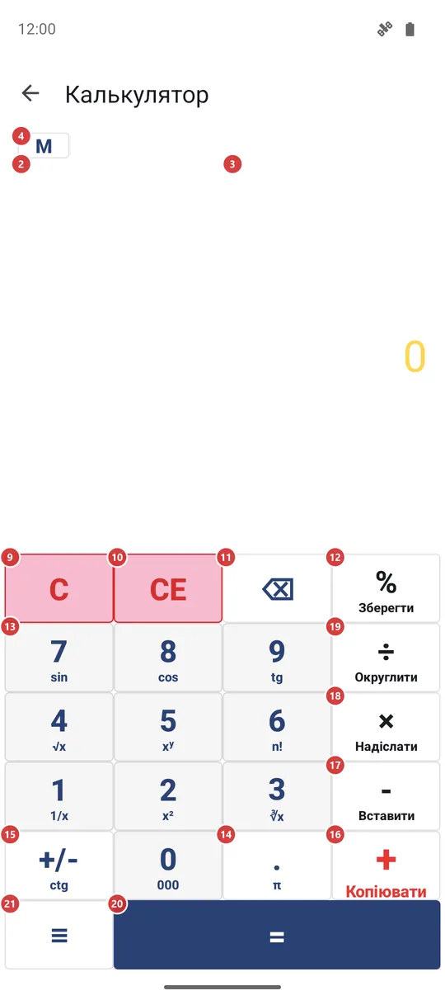
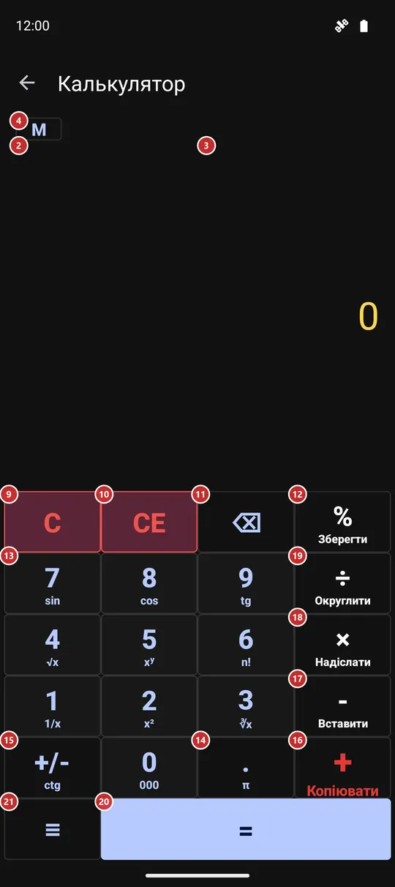

Калькулятор
Для чого цей екран
Калькулятор для швидких підрахунків, не виходячи із застосунку. Він показує відповідь просто під час введення, зберігає історію, яку можна скопіювати, надіслати або зберегти, а кнопки пам’яті та функції доступні з меню.


Порядок дій
- Наберіть перше число цифрами 13 і десятковою крапкою 14. Число з’явиться в результаті 3. «Видалити останній символ» 11 прибирає останню цифру.
- Натисніть знак дії: «Додати» 16, «Відняти» 17, «Помножити» 18 або «Поділити» 19 - і наберіть друге число. Поки ви його вводите, в історії 2 уже видно відповідь, яку дасть «Дорівнює».
- Натисніть «Дорівнює» 20, щоб завершити приклад. Він потрапить в історію 2, а дотик до результату 3 копіює число.
- «Відсоток» 12 і «Змінити знак» 15 працюють з числом, яке ви вводите. «Очистити введення» 10 стирає лише це число, а «Очистити» 9 починає приклад заново.
- Щоб вести накопичувальний підсумок, покажіть кнопки пам’яті 4 і користуйтеся M+ 5, M- 6, MR 7 та MC 8. Індикатор 1 підкаже, що зберігається в пам’яті.
- Утримуйте кнопку, щоб виконати її другу дію: вона підписана дрібним шрифтом під символом. Решта - функції, надсилання, збереження історії та налаштування - у меню 21.
- Якщо на екрані написано, що калькулятор вимкнено, натисніть 23: відкриються налаштування, де його можна ввімкнути.
Елементи
Результат та історія
1Індикатор пам’ятіПоказує число, що зберігається в пам’яті, щоб вам не доводилося його пам’ятати.
Він виглядає як «M» і число та розташований ліворуч від кнопки M. Індикатор видно лише тоді, коли в пам’яті не нуль, і він зникає після очищення пам’яті.
2ІсторіяПерелічує готові приклади, а внизу - той, що ви зараз вводите.
Кожен готовий приклад займає один рядок, наприклад 125+37=162. Поки ви вводите друге число, в останньому рядку вже видно відповідь, яку дасть «Дорівнює», - натискати нічого не потрібно. Якщо в прикладу поки немає відповіді, наприклад ви набираєте дільник і в ньому ще нуль, рядок просто лишається попереднім.
Історія зберігається між запусками. Будь-яку її частину можна виділити довгим натисканням і скопіювати. Зведіть або розведіть два пальці, щоб зменшити чи збільшити текст: розмірів п’ять, обраний запам’ятовується. З клавіатурою «Великі кнопки» історія стискається до кількох рядків.
Усю історію можна надіслати або зберегти у файл із меню.
- Скасування
- «Очистити історію» в меню видаляє всі збережені рядки. Повернути їх не можна, тому спершу збережіть історію, якщо вона може знадобитися.
3РезультатПоказує число, яке ви вводите, а потім відповідь.
Натисніть, щоб скопіювати число в буфер обміну: копія приходить без роздільників розрядів, тому її зручно вставляти будь-куди. Утримуйте, щоб вставити число з буфера. Якщо в буфері цілий приклад, наприклад 12*7+5, калькулятор сам його порахує і запише відповідь в історію.
Довгі числа зменшуються, щоб вміститися. Якщо ввімкнено «Розділяти розряди», між кожними трьома цифрами стоїть кома. Коли в прикладу немає відповіді, тут з’являється повідомлення, наприклад «Ділити на нуль не можна.»; «Очистити» або будь-яка цифра його прибирає.
Кнопки пам’яті
4Показати або сховати кнопки памʼятіПоказує або ховає ряд із чотирьох кнопок пам’яті.
Кнопки пам’яті не заважають, доки ви ними не користуєтеся. Натисніть M один раз, щоб показати ряд, і ще раз, щоб сховати. Калькулятор пам’ятає, чи був ряд відкритий, і наступного разу покаже його так само.
5Додати до памʼятіДодає число з екрана до пам’яті.
Підходить для накопичувального підсумку за кількома прикладами: порахували одну суму, натиснули M+, перейшли до наступної. Число на екрані не змінюється, а індикатор показує новий підсумок у пам’яті. Пам’ять зберігається, тому вона лишається і після закриття калькулятора.
6Відняти з памʼятіВіднімає число з екрана від пам’яті.
Це протилежність M+: користуйтеся, коли якусь суму потрібно прибрати з підсумку. Число на екрані не змінюється, а індикатор показує новий підсумок.
7Викликати з памʼятіВиводить на екран число, що зберігається в пам’яті.
Число підставляється так, ніби ви набрали його самі, тому його можна використати і як перше, і як друге число прикладу. Сама пам’ять не змінюється.
8Очистити памʼятьСкидає пам’ять до нуля.
Знадобиться, коли накопичувальний підсумок пораховано і хочеться почати новий. Індикатор пам’яті зникає.
- Скасування
- Збережене число втрачається, повернути його не можна. Якщо хочете побачити його ще раз, спершу натисніть MR.
Клавіатура
9ОчиститиСтирає весь приклад і починає з нуля.
Стираються набране число, обрана дія й незакінчений рядок унизу історії, а також повідомлення про помилку. Історія та пам’ять лишаються недоторканими.
- Сполучення клавіш
- Esc
10Очистити введенняСтирає лише число, що вводиться, приклад зберігається.
Знадобиться, якщо ви помилилися в другому числі: перше число та дія лишаються, і ви можете набрати друге заново. Якщо дію ще не обрано, вона просто повертає число до 0.
11Видалити останній символПрибирає останню набрану цифру.
Зручна при описці. Якщо на екрані готова відповідь, а не число, яке ви набираєте, одне натискання скидає її до 0.
- Сполучення клавіш
- Backspace
12ВідсотокПеретворює число на відсоток так, як ви, найімовірніше, й маєте на увазі.
Після додавання чи віднімання бере цей відсоток від першого числа: 200 + 10 % дає 20, і «Дорівнює» додасть до 200 ці 20. В інших випадках ділить число на 100. Утримуйте кнопку, щоб зберегти історію у файл, як це робить «Зберегти історію» в меню.
13Цифри 0-9Набір числа: десять кнопок від 0 до 9 - три ряди по три і 0 внизу.
Кожне натискання додає цифру до числа на екрані. Зайві нулі на початку відкидаються: 007 перетворюється на 7. Працює й фізична клавіатура: цифри верхнього ряду або цифровий блок.
У кожної цифри є друга дія при утриманні, вона підписана дрібним шрифтом під цифрою: 1 - 1/x, 2 - квадрат, 3 - кубічний корінь, 4 - квадратний корінь, 5 - піднесення до степеня, 6 - факторіал, 7 - синус, 8 - косинус, 9 - тангенс. Утримання 0 вводить одразу три нулі - зручно для тисяч. Кожна з цих дій робить те саме, що й однойменний рядок у вікні функцій.
- Сполучення клавіш
- 0 / 1 / 2 / 3 / 4 / 5 / 6 / 7 / 8 / 9
14Десяткова крапкаДодає до числа десяткову крапку.
У числі може бути лише одна крапка, тому друге натискання нічого не робить. Після знака дії або в новому прикладі крапка починає число з 0.. Утримуйте кнопку, щоб ввести число пі.
- Сполучення клавіш
- .
15Змінити знакПеремикає число між додатним і від’ємним.
Натискайте до введення числа або після. Нуль вона не змінює. Утримуйте кнопку, щоб отримати котангенс (ctg) числа в градусах.
16ДодатиДодає наступне число до попереднього.
Натисніть її після першого числа і наберіть друге. У довгому ланцюжку приклад рахується зліва направо: знак дії після другого числа спершу рахує вже набрану частину й продовжує з відповіддю. Утримуйте кнопку, щоб скопіювати результат. На клавіатурі те саме, що натискання, робить клавіша плюс.
17ВіднятиВіднімає наступне число від попереднього.
Користуйтеся нею між двома числами. Щоб ввести від’ємне число, краще натиснути «Змінити знак». Утримуйте кнопку, щоб вставити число або приклад із буфера обміну.
- Сполучення клавіш
- -
18ПомножитиМножить попереднє число на наступне.
Натискайте між двома числами. Утримуйте кнопку, щоб надіслати результат до іншого застосунку через системне меню надсилання.
- Сполучення клавіш
- *
19ПоділитиДілить попереднє число на наступне.
Натискайте між двома числами. Ділення на нуль не має відповіді, тому поки ви набираєте число, історія мовчить, а повідомлення «Ділити на нуль не можна.» з’являється лише після «Дорівнює». Тоді ж калькулятор показує жартівливе вікно, схоже на системне попередження про видалення даних: це розіграш, нічого не видаляється. Його єдина кнопка «Докладніше..» відкриває в браузері сторінку про День сміху.
Утримуйте кнопку, щоб округлити число на екрані до цілого.
- Сполучення клавіш
- /
20ДорівнюєЗавершує приклад і показує відповідь.
Готовий приклад потрапляє в історію. Якщо одразу натиснути «Дорівнює» ще раз, остання дія повториться: після 5 + 3 = 8 наступне натискання дасть 11, потім 14. Щойно ви почнете нове число, повтор скидається.
- Сполучення клавіш
- Enter / =
Коли калькулятор вимкнено
22Калькулятор вимкненоПовідомляє, що калькулятор вимкнено в налаштуваннях.
Якщо калькулятор вимкнено в налаштуваннях, замість клавіатури ви бачите коротке повідомлення. Воно трапиться, наприклад, під час запуску з віджета на головному екрані. Поки ви не ввімкнете калькулятор, він не працює.
23Відкрити налаштуванняВідкриває налаштування на вкладці, де калькулятор вмикається.
Кнопка веде на вкладку «Управління» в налаштуваннях; перемикач калькулятора міститься в розділі «Додаткові програми та сценарії». Увімкніть його й поверніться на цей екран - клавіатура вже буде на місці. Перезапуск не потрібен.
Вікно функцій
24ФункціяПоказує п’ятнадцять додаткових функцій у два стовпці.
Оберіть функцію - вікно закриється. Більшість із них одразу застосовуються до числа на екрані: sin, cos, tg і ctg (у градусах), квадратний і кубічний корінь, квадрат, 1/x, log, ln та n!. Степінь (xʸ), DIV (цілочисельне ділення) і mod (залишок) - дії між двома числами: натисніть одну з них, наберіть друге число й натисніть «Дорівнює». Рядок «π» виводить на екран число пі. Якщо для числа функція не має відповіді, наприклад корінь із від’ємного або факторіал від 1.5, з’явиться повідомлення про помилку. Ті самі функції доступні утриманням цифр.
Вікно налаштувань калькулятора
25Розділяти розрядиСтавить кому між кожними трьома цифрами, щоб довгі числа читалися легше.
Коли перемикач увімкнено, 1234567 виглядає як 1,234,567. Розряди розділяються по обидва боки від крапки, і змінюється лише вигляд числа. У скопійованому числі ком немає. За замовчуванням увімкнено.
26Розмір результатуЗадає розмір результату - від дрібного до дуже великого.
Перетягніть повзунок, щоб вибрати найбільший розмір результату. Дуже довгі числа все одно зменшуються й вміщуються в рядок. За замовчуванням обрано середній розмір.
27КлавіатураОбирає вигляд клавіатури: «Звичайна», «Великі кнопки» або «Компактна, справа внизу».
«Звичайна» - стандартне розташування. «Великі кнопки» займають майже весь екран і скорочують історію до кількох рядків - так зручніше влучати великими пальцями. «Компактна, справа внизу» збирає менші кнопки в правому нижньому куті, щоб до всіх дотягнутися одним великим пальцем.
28СкасуватиЗакриває вікно без збереження вибору.
Нічого не змінюється: налаштування лишаються такими, якими були до відкриття вікна.
29ЗастосуватиЗберігає три налаштування й закриває вікно.
Калькулятор одразу переходить на нові налаштування, вони зберігаються на майбутнє.